Pintar un pueblo con un solo estilo.
Todo el arte del escenario de Deriva (fachadas, iglesia, suelo, calles, pircas, vegetación y el panorama de fondo) se generó con IA en ComfyUI. El objetivo no era una imagen linda sino un set de assets de juego: texturas que calcen en volúmenes 3D, que compartan un estilo y que se puedan regenerar de forma controlada.
ComfyUI como línea de producción
- Orquestación
- ComfyUI en Comfy Cloud, con workflows en formato API versionados en el repo.
- Modelo de producción
- Nano Banana Pro (Gemini 3 Pro Image), nodo
GeminiImage2Node. - Recorte de sprites
- BiRefNet dentro del mismo workflow.
- Posproceso
- ffmpeg: recorte automático, despill, extensión de cielo y exportación a JPG y WebP.
El workflow de una fachada
El workflow de una hoja de sprites
Un bloque fijo y una variante corta
Cada prompt combina la variante (lo único que cambia entre casas) con un bloque fijo de tres partes: estilo, formato de textura y prohibiciones. El bloque fijo es lo que hace que los assets sean usables en el juego.
HOUSE: ochre-yellow lime-washed adobe, a wide double wooden carriage door (portón)
made of cardón wood, and one window with iron bars.
FORMAT: a GAME TEXTURE for a 3D box: a perfectly flat orthographic elevation of ONE wall
seen dead-on, zero perspective. The wall fills the ENTIRE frame edge to edge: left and
right edges are the building corners, the bottom edge is the ground line with a low worn
plinth, the top edge is the top of the parapet of a flat mud roof.
FORBIDDEN: sky, roof seen from above, ground, street, people, animals, text, signs,
numbers, plants in front of the wall, borders, cast shadows from outside objects.
STYLE: match the hand-painted gouache technique, light and palette of the reference
painting of the Quebrada de Humahuaca (Jujuy, Argentina).Borde a borde. Los bordes de la imagen tienen que ser las esquinas del edificio; si no, la textura deja una franja de cielo en el juego.
Luz pareja. Nada de sombras proyectadas: la luz y las sombras las pone Three.js, que además cambia entre tarde, lila y noche.
Lateral encadenado. "The reference image is the approved FRONT facade of this exact house": así el lateral repite material, zócalo y parapeto.
Primero el panorama, después todo lo demás

Casas de adobe
Iglesia
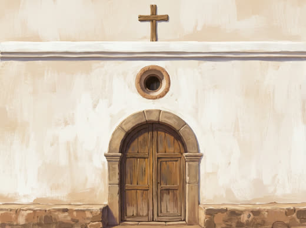
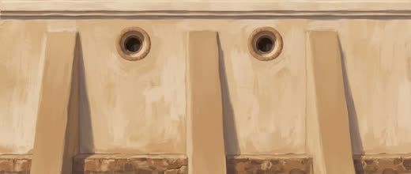
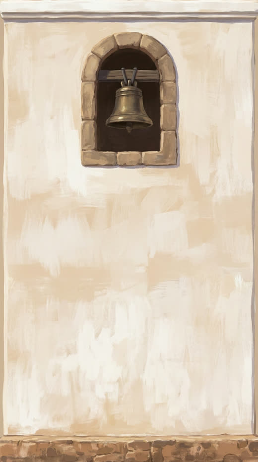
Frente 4:3, lateral 21:9 y torre 9:16, encadenados desde el frente.
Entorno
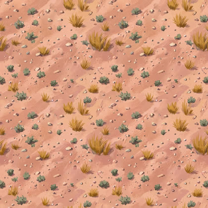
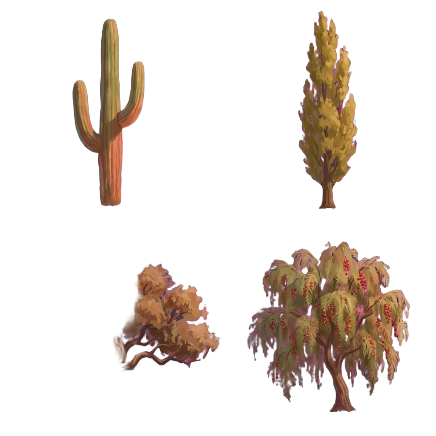
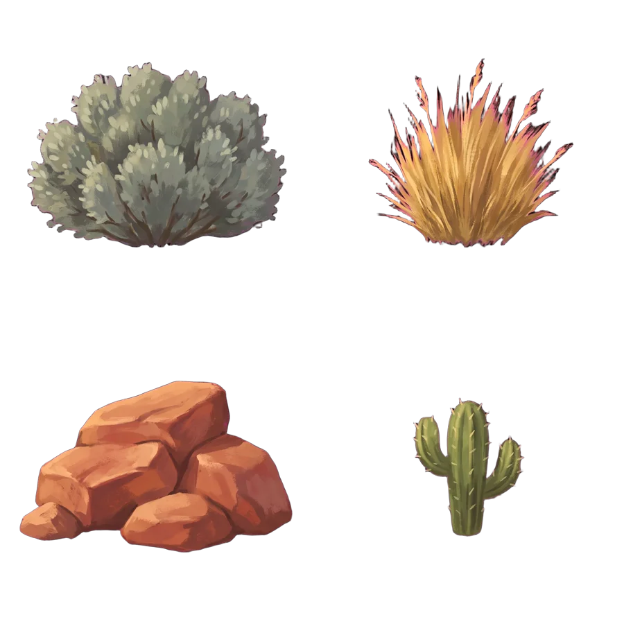
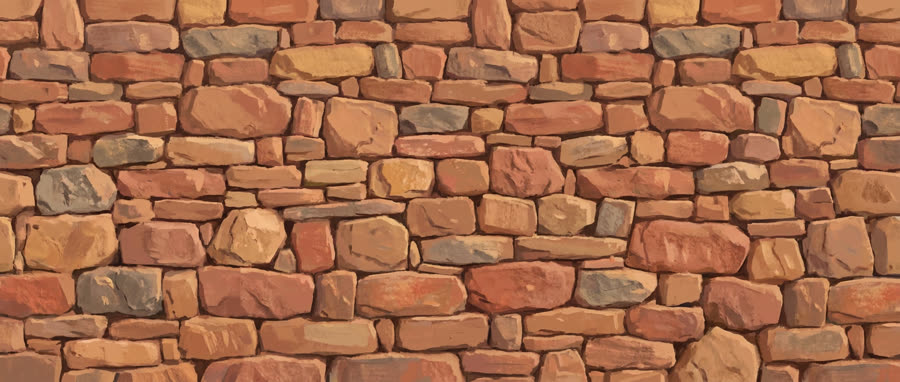
Riders y tablas
El juego suma una pantalla para elegir rider y otra para elegir tabla. Los personajes nuevos siguen el estilo del rider original, con distintos géneros, edades e identidades. Se generan sin tabla y la tabla se dibuja aparte: cinco riders y seis tablas son 26 imágenes en lugar de 120 (30 combinaciones × 4 poses), y cada tabla nueva sirve para todos.
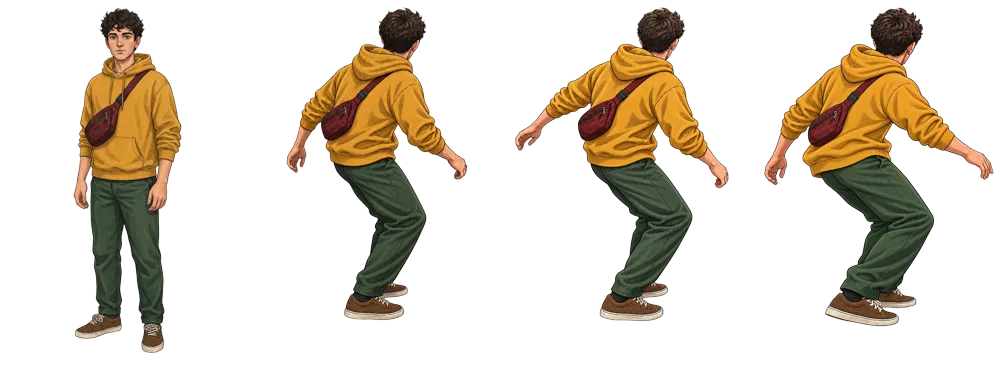
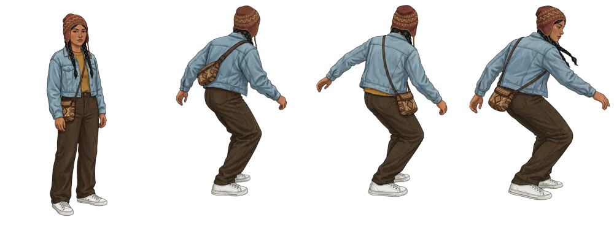
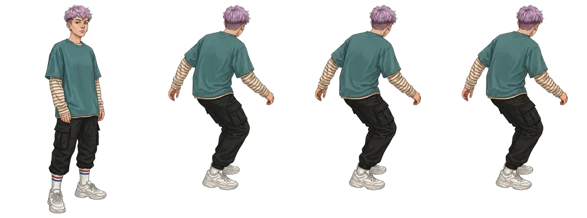
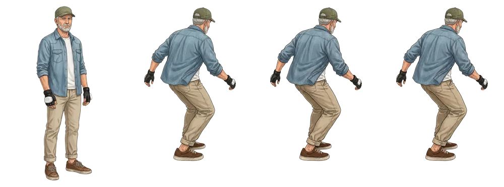
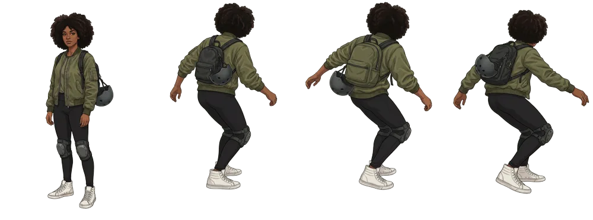
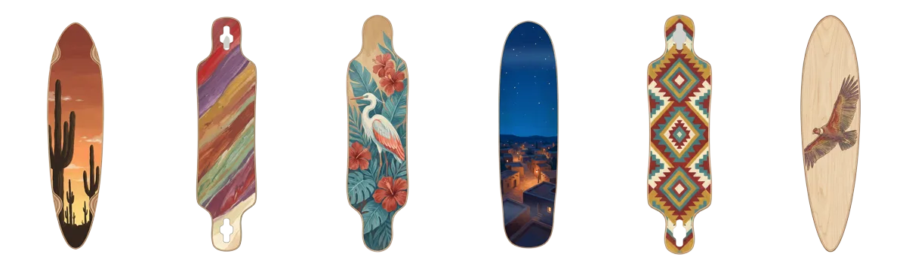
La identidad se mantuvo en las cuatro imágenes de cada rider y ninguna pose quedó con restos de tabla.
Carving tímido. Incluso con el prompt reforzado, los riders nuevos se inclinan menos que la referencia. Es el primer nodo a regenerar.
Del asset al juego
El rider es un sprite 2D y la tabla un objeto 3D debajo de sus pies. El garage guarda la elección y la aplica en vivo, sin recargar la bajada.
- Deck recortado por su propio alfa. La imagen de ComfyUI es la textura de un plano con
alphaTest: la silueta de cada tabla sale de la imagen, sin modelar formas. - Grip transparente. La cámara ve la tabla desde arriba, así que la cara superior muestra la gráfica oscurecida. Un segundo plano teñido de madera, 3 cm más abajo, da el espesor.
- Medidas reales. El largo sale de la ficha de cada tabla (38" a 46"). Las ruedas toman el color de la ficha, giran con la velocidad y el deck se inclina con el carving.
- Pies sobre el deck. El sprite se ancla en la última fila opaca del alfa (la suela) y se apoya en la cara superior de la tabla.
- Cambio sin parpadeo. Cada pose nueva reemplaza a la vieja cuando termina de cargar, y la textura anterior se libera.
- La tabla va derecha y se desliza bajo los pies. En cada pose se detecta dónde apoya cada zapatilla. En cada cuadro, el rayo de la cámara que pasa por esos puntos marca dónde se ve cada pie sobre el deck, y la tabla, siempre apuntando por la ruta, se corre de costado y hacia adelante hasta quedar debajo.
- Cuerpo sobre la pose pintada. El sprite se inclina hacia la curva pivotando en los pies, flexiona las rodillas al frenar y rebota apenas con la velocidad.
Cuando el problema está en la imagen, se arregla en la imagen
Dos riders tenían un pie en el aire. Primero se intentó resolverlo con código, y las dos soluciones empeoraron el resultado. La causa real era que Killa y Nia no tenían una postura de longboard: la generación encadenada les había abierto las piernas de costado. Se regeneraron sus poses editando las poses originales de Tomi y cambiando solo la identidad, y el problema desapareció sin trucos.
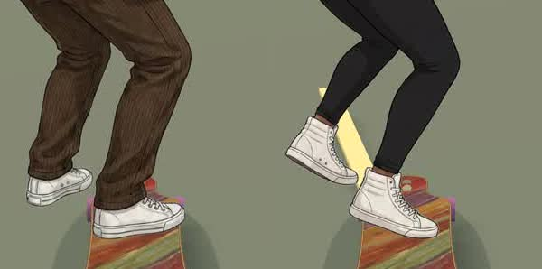
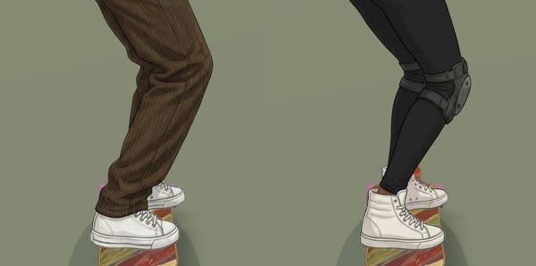
Girar la tabla para seguir los pies. Los pies apoyaban, pero la tabla iba en diagonal respecto de la ruta. Se descartó: la tabla va derecha y es el cuerpo el que se adapta.
Deformar la pierna en el shader. Mover la pierna de adelante con una máscara dejaba cortes visibles. Se sacó del código.
El punto de apoyo se calibró con hojas de contacto de los cinco riders. En la suela, todos parecían parados sobre la nariz; al 5 % de la altura, sobre la cola. Quedó en 3,5 %.
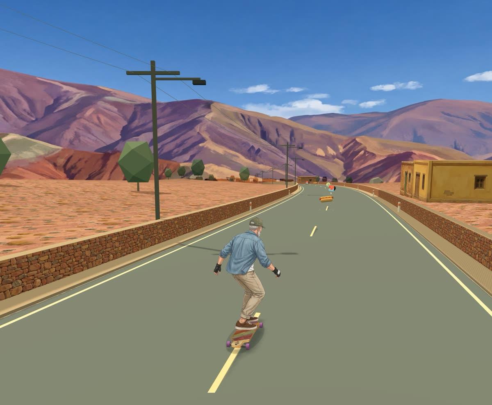
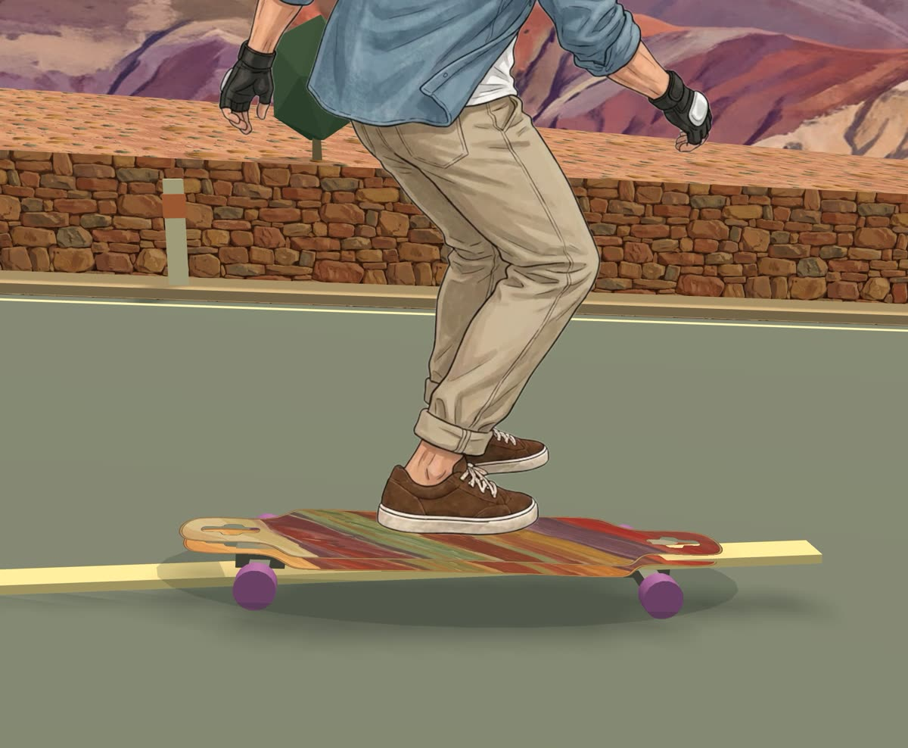
El paso a paso completo, del workflow de ComfyUI al código del juego, está en art/characters/PIPELINE.md.
Llamas en lugar de conos
Los conos de la ruta pasaron a ser llamas que la cruzan. Salen del campo por un hueco en la pirca, o de la vereda en el pueblo, y arrancan apuntando al rider: cruzan su línea justo antes de que llegue, así que para esquivarlas hay que girar, frenar o acelerar. Una de cada tres, marrón, cruza al trote y deja menos margen.
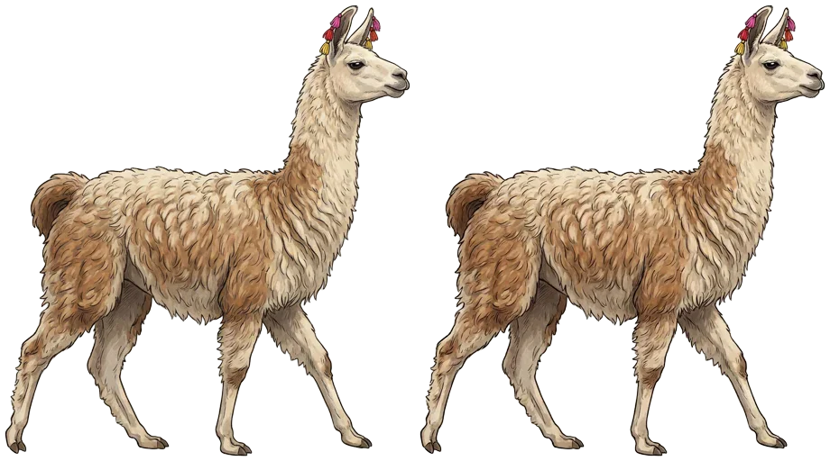
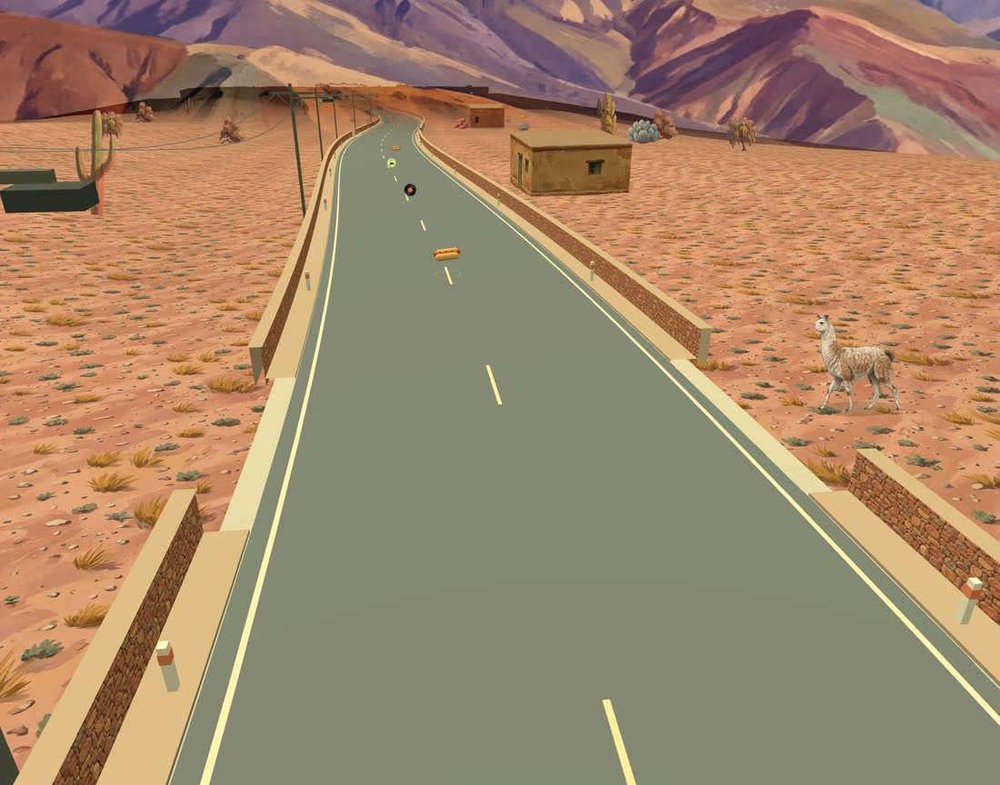
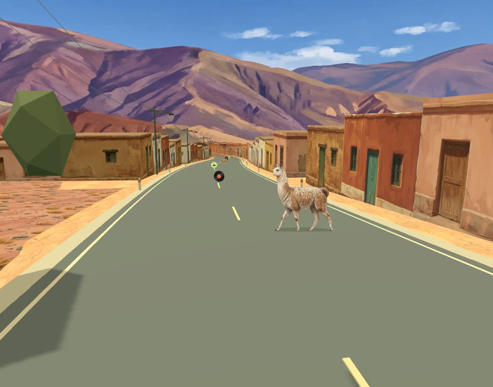
Dos cuadros se veían rígidos. Alternar solo dos poses daba una llama de cartón.
Arreglo en el juego, sin regenerar. Un shader inclina las patas desde la línea de la panza, delanteras y traseras en fases opuestas, entre los dos cuadros pintados. El ciclo avanza con el terreno recorrido, así al trotar el paso se acelera solo.
Detalle en art/animals/PIPELINE.md. Costo: 2 imágenes de Nano Banana Pro, ≈71 créditos.
Nano Banana Pro contra tres modelos abiertos
Mismo encargo, mismas referencias y mismas semillas, con dos variantes de la etapa Valparaíso. Los modelos abiertos corrieron en la misma cuenta de Comfy Cloud, con sus ajustes recomendados.
Borde a borde, zócalo y cornisa donde se pidieron. El lateral repite postigos y ventanas.


Pincelada cercana a la del juego. Márgenes blancos a los costados: hay que recortar.


Llena el cuadro, pero el color es plano y el lateral quedó con tres ventanas y mucha pared vacía.


Pinta una escena: cielo, vereda, casas vecinas. Inservible como textura sin recorte manual.


| Modelo | Borde a borde | Estilo | Frente ↔ lateral | Sigue el encargo | Costo por casa | Licencia |
|---|---|---|---|---|---|---|
| Nano Banana Pro | ≈71 créditos | API de Google | ||||
| Flux.2 Dev | 75 s de GPU | No comercial (dev) | ||||
| Qwen-Image-Edit 2511 | 74 s de GPU | Apache 2.0 | ||||
| Z-Image Turbo | 6 s de GPU | Apache 2.0 |
Veredicto: Nano Banana Pro para producción. Flux.2 Dev es la alternativa abierta viable si se le suma un recorte automático de márgenes. Los modelos sin referencia de imagen no mantienen la coherencia entre las caras de una misma casa.
Arreglar sin regenerar
Cada imagen regenerada cuesta créditos y puede romper algo que ya estaba bien. Los defectos chicos se resolvieron con ffmpeg, de forma determinista.
Márgenes blancos en 3 de 6 casas de adobe. Recorte automático detectando el borde sobre la imagen invertida:
Halo magenta en los recortes de BiRefNet. Despill que baja rojo y azul donde superan al verde por más de 50.
Encuadre alto del panorama. Cielo extendido estirando las 20 filas superiores y suavizándolas.
# Márgenes: detectar el borde claro y recortar
ffmpeg -i casa.png -vf "negate,cropdetect=limit=0.1:skip=0" -f null -
ffmpeg -i casa.png -vf "crop=1206:594:86:90,scale=1024:576" casa.jpg
# Halo magenta: despill por canal
geq=r='r(X,Y)-if(gt(min(r(X,Y),b(X,Y))-g(X,Y),50),min(r(X,Y),b(X,Y))-g(X,Y),0)':g='g(X,Y)':b='…':a='alpha(X,Y)'
# Cielo: estirar la franja superior y apilarla arriba
[0]split[a][b];[a]crop=iw:20:0:0,scale=4096:766,gblur=sigma=6[sky];[sky][b]vstackLa primera dirección de arte: Valparaíso
Antes de Jujuy el juego tuvo una ciudad inspirada en Valparaíso, con ocho fachadas de chapa y estuco, un panorama de bahía y un mural. Ese trabajo definió el método y quedó en el repo como archivo.
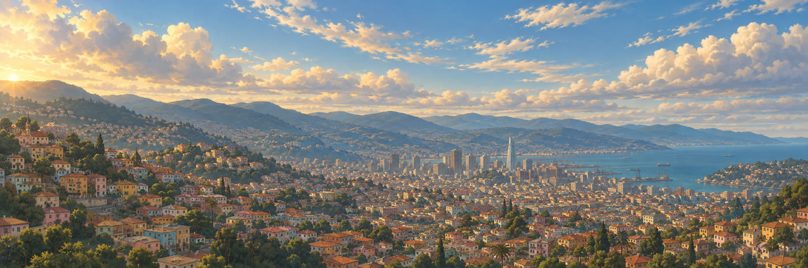
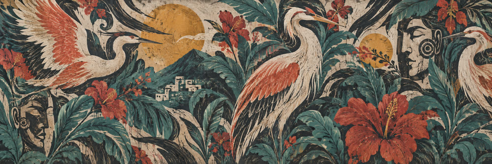
Qué se generó y cuánto costó
| Ronda | Qué | Modelo | Imágenes | Créditos | GPU | Qué falló |
|---|---|---|---|---|---|---|
| 1 | Primera casa (frente + lateral) | Nano Banana Pro | 2 | 71 | — | Nada: borde a borde a la primera. |
| 2 | Siete casas, suelo, árboles, arbustos | Nano Banana Pro + BiRefNet | 17 | 605 | 73 s | Marco en una casa; halo magenta; buganvilla magenta sobre fondo magenta. |
| 2 | Comparativa | Flux.2 Dev, Qwen-Image-Edit 2511, Z-Image Turbo | 12 | — | 313 s | Márgenes, puertas prohibidas, vistas en perspectiva. |
| 4 | Panorama de la Quebrada (4K) | Nano Banana Pro | 1 | 62 | — | Encuadre alto, corregido en posproceso. |
| 4 | 6 casas, iglesia, suelo, calle, pirca, vegetación | Nano Banana Pro + BiRefNet | 20 | 706 | 71 s | Márgenes en 3 casas; algarrobo cortado. |
| 5 | 5 riders × 4 imágenes, 6 tablas | Nano Banana Pro + BiRefNet | 26 | ≈923 | ≈713 s | Carving menos inclinado que la referencia; manchas en el borde de una tabla. |
| 5 | Poses v2 de Killa y Nia (edición sobre la pose original) | Nano Banana Pro + BiRefNet | 8 | ≈284 | — | La mochila de Nia aparecía en una sola pose: se regeneraron dos. |
| 6 | Llama: dos cuadros de caminata | Nano Banana Pro + BiRefNet | 2 | ≈71 | — | Nada en la imagen; la rigidez de la caminata se resolvió con un shader. |
| Total | 88 | ≈2.722 | ≈1.170 s |
Datos del registro de facturación de Comfy Cloud. Nano Banana Pro costó ≈35,4 créditos por imagen a 1K y 2K, y 62 a 4K. GPU: RTX Pro 6000.
Lo que queda para el próximo proyecto
Encadenar frente → lateral en el mismo workflow es lo que da coherencia entre las caras de una casa.
Un ancla de estilo generada primero vale más que referencias viejas de otra dirección de arte.
El fondo de una hoja de sprites no puede compartir color con ninguno de sus elementos.
El posproceso determinista (recorte, despill, estirar el cielo) ahorra créditos y evita perder lo que ya estaba bien.
Guardar cada workflow como archivo en el repo hace que el arte sea reproducible y revisable como el código.
Antes de generar más texturas, revisar la geometría: la trama urbana cambió la lectura más que 20 imágenes.